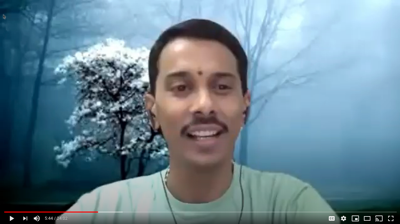

The @ Company Update - September 2020
I hope you are staying well!
If you haven’t seen the docudrama The Social Dilemma (https://www.youtube.com/watch?v=uaaC57tcci0), it is really worth a watch! Our timing for The @ Company could not be more perfect.
Here are this month’s highlights:
- We kicked off our first @ppathon! Denise managed to send out invitations to 72 universities and we have over 40 sign ups from all over the world. Applications are due Monday. Here is a link to the @ppathon.
- This @talks session featured a discussion of our Early Access Program. Our next session will
discuss our @ppathon.

https://www.youtube.com/watch?v=FP3pCD4KY-M&t=66s - Our updated website (including a new registrar) should be launched early next week. Special thanks to all who gave their feedback!
- We have our data room set up for raising our next round of funding. Please let me know if you are interested in participating and we will schedule an update for you and grant you access to the virtual data room.
- Jory Des Jardins, our new CMO, hit the ground running, so expect to hear some fun marketing news next month and see her influence on our new website.
These three apps are scheduled to be available for our launch:
- @persona (formally @me) - Your public profile set up, currently in beta
- @buzz - Contacts and groups reimagined, currently in alpha
- @mosphere - Completely private (peer to peer) file sharing, currently in development
And now for the tech deep dive:
@ Core Protocol
We’ve progressed on two fronts this month. The first is the implementation of the stream verb and the second is a deep focus on further security controls.
The stream verb was been the last core protocol verb to be developed, and that is because it is very tough to make it both functional and easy to use. The first app to use the stream verb, @mosphere, enables person to person, real time, end-to-end encrypted file transfer. Usually with file transfers, you transfer a file to somewhere and then the receiver picks up the file from that “somewhere”. We are used to Google drive, iDrive, Box, and Dropbox keeping all our files stored up in the cloud. The downside is that your file is sitting somewhere out of your control. But in our app, the stream verb streams the file from the sender’s device to their @protocol server. The receiver then connects to the sender’s @protocol server and accesses the streamed file. The file never is stored; it is only streamed packet by packet and is encrypted end-to-end. It is cached at the receiver end and can be removed by the sender at any time.
The streaming part is pretty straightforward, but the notification and security around each of the events is what needs real-time notifications and security at every step. Fortunately, last month's work with the notification and monitor verbs was leveraged to solve those challenges.
We are currently testing the streaming verb and working with the partner who is developing the @mosphere secure file transfer app. The two teams are meeting every day and we are all excited to see the end product.
Security is close to our hearts, as well as the use of well-known and trusted security technology and techniques. One of those technologies is the use of TLS to provide encrypted connections between processes. Most frequently used for web browsers and web servers, TLS provides standards based encryption, but it can also be used to authenticate clients. Just as a web browser checks that the website you are connecting to is the one you selected, the same check can be applied to clients. This is exactly what we have implemented in the @protocol.
When an @server connects to another @server, the connecting certificate and the serving certificate are confirmed to be accurate and matched against the expected DNS name in the CN or the SAN fields of the respective SSL certificates. This closes spoofing of connections and another classic internet attack known as amplification, as the pol verb will be acted on only if the certificates match.
Cloud infrastructure
We have been building out the production cloud infrastructure and have decided to use Google’s Cloud, GCP. This decision was based on GCP’s ability to provide multi-datacenter infrastructure and the ability to scale alongside us.
Kubernetes (GKE) provides multi-datacenter redundancy in a region (Iowa in our case) but that redundancy is invisible to us. It just automagically works — thanks Google! In a similar fashion, we will be building out the Docker Swarm infrastructure as well in the coming days and weeks.
Backups and business continuity have been given a lot of thought, and we’ve decided to continue with our strategy of using Amazon's AWS cloud as our backup and BCP platform. Each of our systems are backed up to AWS and in the very unlikely event of problems in GCP we can rebuild in AWS.
@apps
The primary library that application developers use, the AtClient library, has been condensed into a single inclusion into the flutter pubspec.yaml. The methods have also been reduced and simplified so app developers can use them more easily with their apps.
At this point, we have 13 apps in various stages of development. The upcoming @ppathon will add to this list, and we have also a very long list of apps that we would like to get into development. This is in support of the goal of three apps ready at launch and one to two per month thereafter.
There are so many other things going on in the technology stack including strengthening the developer environment, additional focus on testing, bug finding efforts, and integration efforts bringing everything together. The teams are all busy for sure, but everyone is having fun and excited to show the world what we have been doing.
Wishing you well!